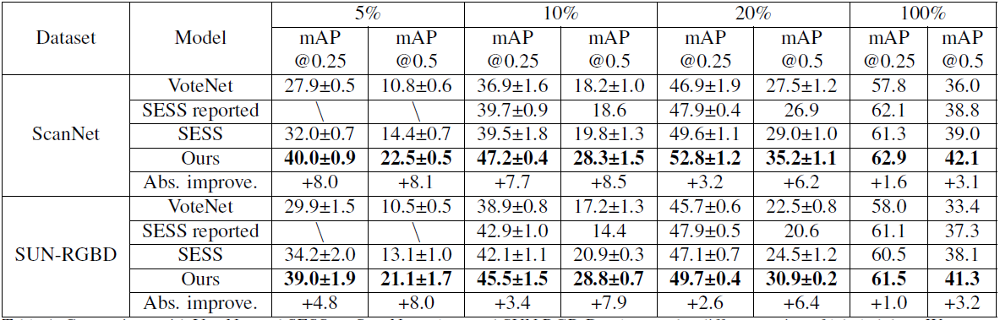
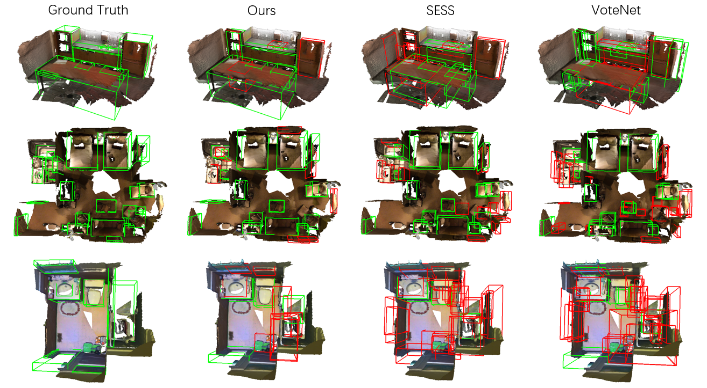
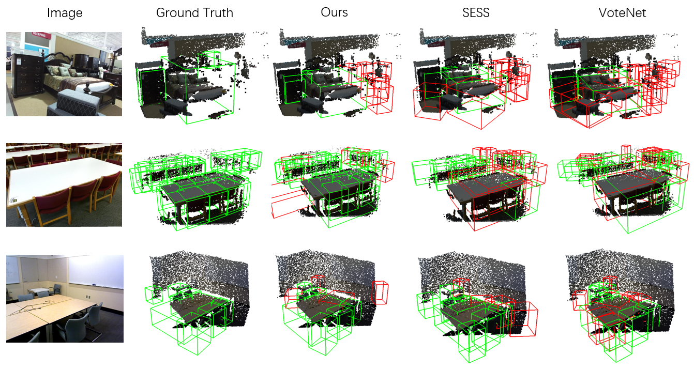

3DIoUMatch: Leveraging IoU Prediction for Semi-Supervised 3D Object Detection
arXiv preprint

3D object detection is an important yet demanding task that heavily relies on difficult to obtain 3D annotations. To reduce the required amount of supervision, we propose 3DIoUMatch, a novel method for semi-supervised 3D object detection. We adopt VoteNet, a popular point cloud based object detector, as our backbone and leverage a teacher-student mutual learning framework to propagate information from the labeled to the unlabeled train set in the form of pseudo-labels. However, due to the high task complexity, we observe that the pseudo-labels suffer from significant noise and are thus not directly usable. To that end, we introduce a confidence-based filtering mechanism. The key to our approach is a novel differentiable 3D IoU estimation module. This module is used for filtering poorly localized proposals as well as for IoU-guided bounding box deduplication. At inference time, this module is further utilized to improve localization through test-time optimization. Our method consistently improves state-of-the-art methods on both ScanNet and SUN-RGBD benchmarks by significant margins. For example, when training using only 10% labeled data on ScanNet, 3DIoUMatch achieves 7.7 absolute improvement on mAP@0.25 and 8.5 absolute improvement on mAP@0.5 upon the prior art.
Results
Performance: Comparison with VoteNet and SESS on ScanNet val set and SUN RGB-D val set under different ratios of labeled data
Visualization: Qualitative results on ScanNet, with 10% labeled data. Here green bounding boxes have an IoU >= 0.25 while red bounding boxes are with an IoU < 0.25
Visualization: Qualitative results on SUNRGB-D, with 5% labeled data
Paper
Latest version (December 8, 2020): arXiv:2012.04355 in cs.CV or here.
Team
* stands for equal contribution.
Bibtex
@article{wang20203dioumatch,
title={3DIoUMatch: Leveraging IoU Prediction for Semi-Supervised 3D Object Detection},
author={Wang, He and Cong, Yezhen and Litany, Or and Gao, Yue and Guibas, Leonidas J},
journal={arXiv preprint arXiv:2012.04355}, year={2020}}
Acknowledgements
This research is supported by a grant from the SAIL-Toyota Center for AI Research, NSF grant CHS-1528025, a Vannevar Bush Faculty fellowship, and gifts from the Adobe, Amazon AWS, and Snap corporations.
Contact
If you have any questions, please feel free to contact Yezhen Cong at cyz17_at_mails.tsinghua.edu.cn and He Wang at hewang_at_stanford.edu